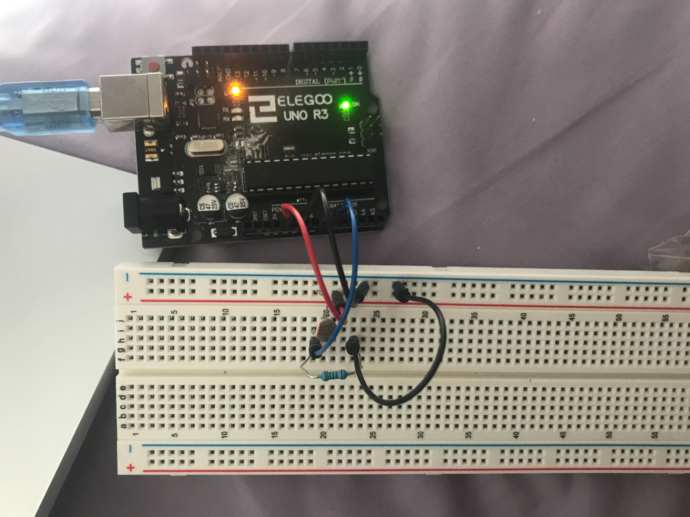
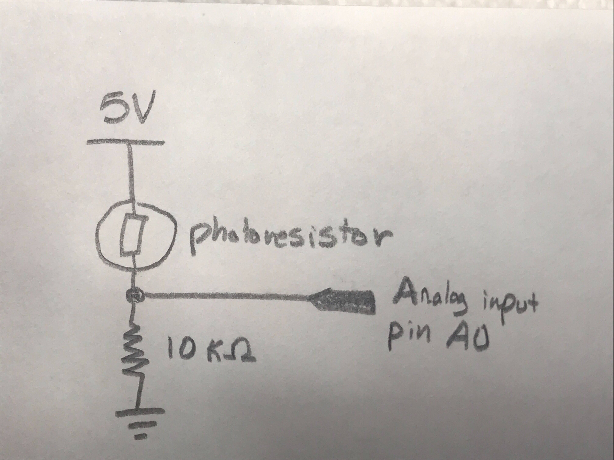

Erin Graves' Assignment 6!
Overview
Create a webpage with p5.js that interacts with data that’s coming from your arduino over serial. You must use Serial.print and p5.js. Your webpage must be interactive.
Code Snippet
Arduino Code
void setup() {
Serial.begin(9600); //initialize serial communications at 9600 bps
}
//repeats
void loop() {
int sensor = analogRead(0); // reads the photoresistor values at pin A0
int outputValue = map(sensor, 100, 550, 0, 255); // maps values to the range of the analog out:
Serial.println(outputValue); // prints the value read by the photoresistor
delay(50); // 50 ms delay between loops
}
Sketch.js Code
var serial; // variable to hold an instance of the serialport library
var portName = '/dev/cu.usbmodem1421' //rename to the name of your port
var datain; //some data coming in over serial!
var xPos = 0;
function setup() {
serial = new p5.SerialPort(); // make a new instance of the serialport library
serial.on('list', printList); // set a callback function for the serialport list event
serial.on('connected', serverConnected); // callback for connecting to the server
serial.on('open', portOpen); // callback for the port opening
serial.on('data', serialEvent); // callback for when new data arrives
serial.on('error', serialError); // callback for errors
serial.on('close', portClose); // callback for the port closing
serial.list(); // list the serial ports
serial.open(portName); // open a serial port
createCanvas(1200, 800);
background(0x08, 0x16, 0x40);
}
// get the list of ports:
function printList(portList) {
// portList is an array of serial port names
for (var i = 0; i < portList.length; i++) {
// Display the list the console:
print(i + " " + portList[i]);
}
}
function serverConnected() {
print('connected to server.');
}
function portOpen() {
print('the serial port opened.')
}
function serialError(err) {
print('Something went wrong with the serial port. ' + err);
}
function portClose() {
print('The serial port closed.');
}
function serialEvent() {
if (serial.available()) {
datain = Number(serial.readLine());
//console.log(datain);
}
}
function graphData(newData) {
// map the range of the input to the window height:
var yPos = map(newData, 0, 255, 0, height);
// draw the line in a pretty color:
stroke(255, 0, 80);
line(xPos, height, xPos, height - yPos);
// at the edge of the screen, go back to the beginning:
if (xPos >= width) {
xPos = 0;
// clear the screen by resetting the background:
background(0x08, 0x16, 0x40);
} else {
// increment the horizontal position for the next reading:
xPos++;
}
}
function draw() {
graphData(datain)
}
Circuit
My circuit uses a photoresistor to output data read from a light or dark environment to a graph. I used the serial monitor to test what the values were for light and dark environments. These min and max values were used in my map function.
Schematic
The photoresistor works the same as assignment 3. The photoresistor can have a very low resistance, allowing the 5V to flow to ground and damage the arduino. Therefore an additonal 10k ohm resistor is needed. 10k ohms is safe since a maximum of 0.002A can flow through the arduino. 5V / 0.02A = 250 ohms. Therefore 10k ohms is safe.
Video